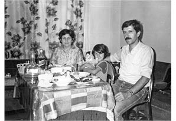
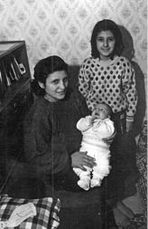
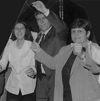

“Kaplumbağalar da Okula Gider mi Anne?”
Yasemin Yavuz15
12 Eylül’den sonra 1983 yılında annem Gülser Yavuz ve babam İbrahim Yavuz içeri alındılar. Ben iki yaşındaydım. Babam TÖB-DER’liydi. TÖB-DER ve Dev-Yol üyesi olmakla suçlandı. Annem üniversite yıllarında Dev-Genç’liymiş. Eve polis baskını oluyor, annemi de babamdan dolayı alıyorlar, iki aya yakın hücrede kalıyor. Babam Selimiye’de ve Sultanahmet Cezaevi’nde 1.5 yıl yatıyor ama hakkındaki suçlardan beraat ediyor. İstanbul Yenibosna’da oturuyoruz.
Annem ve babam alınacaklarını hissediyorlar ve beni Kırklareli’ne, köye bırakıyorlar. Ben şöyle hatırlıyorum: Köydeyiz, ben anneanneme anne, dayılarıma ağabey, teyzelerime abla diyorum. Annemi ise şöyle hatırlıyorum, annem gözaltından çıkınca geliyor beni görmeye, hediye bir şey getiriyor, sonradan onu anne olarak düşünmeye başlıyorum ama ben kendimi aslında anneannemin çocuğu olarak düşünüyorum o zamanlar. Teyzemler çok ilgileniyordu benimle. Dayılarımla aramda yaş farkı çok yok, onlara ağabey diyorum ve onlar da teyzemlere abla dediği için ben de teyzemlere abla diyorum. Kendimi de onların kardeşi sayıyordum. Arada annemin geldiğini hatırlıyorum. Teyzelerimden birine çok alışıktım hatta. Bir ara o evlendi, çok üzülmüştüm. Biraz aileyle bir kopukluk var bu dönem. Annem çok kalmamış içeride ama kopukluk var.
Hatırladığım, annemle uyuyorduk, evde başka kimse yoktu. Bazen teyzemler geliyordu ama evde erkek yoktu.
Demir parmaklıkların önünde ağladığımı hatırlıyorum. Beni Selimiye Cezaevi’ne götürdüğünü söyledi annem. Gerçekten de çok ağlamışım demir parmaklıkları görünce.
Daha sonra babamın geldiğini hatırlıyorum. Eve geldiğini değil de evde bir baba olduğunu hatırlıyorum. Mesela geceleri rahatsızlandığımda kalkardım, annem ilgilenirdi benimle, o zaman babam yoktu. İki kardeşiz, kardeşim 1991 doğumlu.

Yasemin, anne ve babasıyla
Çocukluğum...
Çocukluğumu dışarıda oynarken, işte bu yeni inşaatlar olur, onların demirleri vardır, onlarda sallanırken hatırlıyorum. Yenibosna’da evin kenarından bir dere akardı, bayağı pisti. Ona düşerdim, oynardım, saklanırdım, çok içime kapanıktım. Evde sürekli, sakın bir şey söyleme, sakın konuşma durumu vardı. Bundan dolayı bende de bir içe kapanıklık vardı. Tek başıma çok oyun oynuyordum. Bebeklerimi konuştururdum. Polisleri de düşman olarak görüyordum.
Babam içerideyken, ben dışarıda gördüğüm herkesi baba sanırmışım, gördüğüm erkeklere baba diye koşarmışım. Her sabah babam nerede diye kalkarmışım, annem de okula gitti dermiş. Bir gün köyde “Kaplumbağalar da okula gider mi anne?” diye sormuşum. Çünkü babam her gün okulda ya, kaplumbağalar dahil herkesi ve her şeyi okulda sanıyordum.
Babamın içeriden çıkıp eve geldiği günü hatırlamıyorum ama anneme gidip, bu pijamalı adamı nereden buldun, nereden getirdin diye bir çıkışmışım. Babamı bir anda salmışlar sanırım. Öylece pijamayla çıkarmışlar. Annem onları anlatır, gidip almış babamı Şirinevler Karakolu’ndan. Öyle pijamayla gelmiş, ben de kızmışım.
Babamın geri gelişinden sonra ilişkimizi tekrar nasıl kurduğumuzu hiç hatırlamıyorum. Akşamları bir yerlere oturmaya giderdik. Belki de aralarında bir şeyler konuşuyorlardı arkadaşlarıyla. Sultanahmet Cezaevi bir ara çay bahçesi oldu. Bütün devrimciler oraya oturmaya gidiyordu. Babamla oraya gittiğimizi hatırlıyorum. 6-7 yaşlarında olabilirim. Bana hücresini göstermişti. Sanırım tekrar bir toparlanma sürecinin başladığı yıllardı.
Daha sonra Eğit-Sen kuruldu, ismi değişti Eğitim-Sen oldu. Babam öğretmenlikten istifa etmişti ama annem devam etmişti. Annem Eğit-Sen kurucularından biri oldu. Babam Eğit-Sen’den önce Yenibosna Halkevi, Bakırköy Halkevlerinin kuruluşuyla uğraştı. Bu süreçleri daha net hatırlıyorum. Sürekli toplantılara gidiyorduk. Özellikle Eğit-Sen süreci toplantıları akşam olurdu. Bakırköy Ses’e gittiğimizi hatırlıyorum. Bu toplantılarda etraftan bağımsız ben de ödevlerimi yapardım. Sanırım bu da şimdi işime yansıyor, çalışırken etrafı duymuyorum. Öyle bir etkisi var. Toplantıları dinlerdim, dergileri de okurdum. Hatta “Aa şu dergiyi okumadım!” diye, Eğit-Sen, Eğitim-Sen dergilerine bakardım. Sonuçta bir sendikanın doğuşuna tanık oluyordum. Onlar güzel kalmış aklımda. Sendikanın pikniklerine gitmemiz... Mavi Radyo’yu hatırlıyorum. Bunlar benim için eğlence gibiydi. Hatta mitinge bazen tanıdıkları görmeye giderdik annemle. Çünkü orada büyümüşüm. Gidiyorum, şöyle bir tur atıyorum, kim var, kim yok bir bakayım diye.
SHP diye evde bağırdığımı hatırlıyorum. Bütün devrimciler o dönem SHP’yi destekliyormuş. Babam Dev-Genç’li, Dev-Genç’li diye büyüttü beni... Kulaklarımda hep o sloganlar vardı.
Babam öğretmenlikten istifa ediyor ve istifa etmeye gittiğinde Eskişehir’e sürüldüğünü öğreniyor. Aslında babam öğretmenken de sabahları öğretmenlik yapar, öğleden sonra da, pazarcılık yapardı. Siyami Erdem’in oğlu Koray’la pazarda bağırdığımızı hatırlıyorum “Domateees!” diye. Çiçekçilik yaptı babam, zeytin satıyordu, elbise sattı. Sarıgül diye bir arabası vardı, işte o Sarıgül’le Yenibosna’da sokağın başına kadar mahallenin çocuklarıyla arkasına binerdik, bizi bırakırdı. Hatta arabanın yanında da Sarıgül yazardı, küçük pazar arabasıydı. Aslında o zamanlar, babam pazarcılık yaparken çok mutluyduk. Daha sonra inşaat işleriyle uğraştı bir dönem, durumu çok iyi oldu ama sonra iflas etti. Ondan sonra da zaten bir türlü düzelmedi durumumuz. Tabii öğretmen olsaydı en azından bilirlerdi eve ne geldiğini. Kendi işinde çalışınca öyle olmuyor. Annem öğretmenliğe devam etti ve emekli oldu.
Babam, pazarcılık yaptığı dönemde eve hep geç gelirdi. Ben de hep babamı beklerdim, zil çalınca koşardım, onu hatırlıyorum. İlgilenirdi benimle, tarih dersini beceremezdim, onu çalıştırırdı. Babam aslında çok yufka yürekliydi ama sertti. Hemen parlayabilirdi. Ondan dolayı korkardım babamdan. Sürekli tavırlarıma dikkat etmek zorundaydım, Yenibosna’da yıllarca oturduğumuz için herkes tanıyordu, onun için son derece kısıtlı davranıyordum ve boğuluyordum bundan dolayı. Eve geç gitsem sorun oluyordu, sokakta yürüsem sorun oluyordu. Bir genç kızın Yenibosna’da yaşaması da ayrı bir sorundur. Çevre beni çok boğuyordu açıkçası. Üniversiteyi bitirdiğimde; ancak bir şeyleri konuşmaya başladık babamla. Ben yaptığım şeylerden bahsediyordum, o da beni dinliyordu.
Babama çok saygı duyuluyordu. Zaten kendisi mahallenin çocuklarını eve topluyordu, onlara ders anlatıyordu. Üniversite döneminde bir ara yurtta kalmıştım. Sonra eve döndüm, gündüz oturuyorum, baktım sürekli zil çalıyor. Rahatsız oluyorum, sesten, gürültüden. 3 tane küçük kız vardı, bunların aileleri de çarşaflı, kapalıydı ama babam onları alıştırmış, sürekli İngilizce ve matematik derslerini sormaya bize geliyorlar. Kapıyı açıyorum, onlar hemen yerlerine gidiyor, oturuyor, herkes de yerini biliyor. Genelde Hoca diyorlardı babama, saygı duyuyorlardı.
12 Eylül’ün Etkileri…
Annem hâlâ anlatır 12 Eylül’ü. Ben darbeyle büyüdüm yani. Evde zaten sürekli siyaset üzerine konuşma, tartışma veya durum değerlendirmesi yapılırdı. Hâlâ etkisi oluyor, zaman zaman yine içime kapandığım oluyor. Ailemde de tabii ki etkisini gördük. Kolay değil, cezaevinde türlü türlü muamelelere maruz kalıp hayata devam edebilmek.
Ailem belki diğer ailelere göre daha paylaşımcıydı, belki kendi ailemizi çok düşünmeyip çevredeki insanlara karşı daha çok yardımseverdiler. Şimdi tabii düşünüyorsun, babam biraz daha kendini düşünseydi belki farklı olurdu diyorsun. Belki doktora giderdi. Bir türlü götüremiyorduk çünkü. Bir kere gitti, fıtıktan ameliyat oldu ama kalp sorunu olduğu belliydi. Çok sigara içiyordu. Kalp krizinden bir anda vefat etti. Belki doktora gitseydi, ömrü biraz daha uzun olurdu. Bu yönden bakarsak; ikisiyle de devrimci oldukları için tabii ki hep gurur duydum ama bunun sıkıntılarını da yaşadık, hâlâ da yaşıyoruz. Yel değirmeniyle Don Kişot gibi savaşıyorsun, belli bir kazanım da elde etmeyebiliyorsun. Moral bozukluğu da olabiliyor.
Babam işkence gördüğünü söyledi ama bize ayrıntılı olarak hiçbir zaman neler olduğunu anlatmadı. Soramıyorduk. Annem biraz anlattı ama annem de kötü oluyordu anlatınca.
En Çok Canımı Acıtan…
Babamın ölümünü kabullenemedim. Bunu kabullenemedim. Biraz daha yaşayabilirdi. Kendine bakabilirdi, insanları düşünürken biraz da kendini düşünebilirdi.
Annemle İlişkilerim…
Annem sinirliydi, hatta ortaokuldayken daha da sinirli hatırlıyorum. Babam beni daha çok korurdu. Evde herkes sürekli bir cephe oluştururdu. Babam hep beni kendi tarafına çekmeye çalışırdı. Babam, siyaseten biraz daha birikimliydi. Annemle ilişkimde, dönem dönem birbirimizi anlamadığımız oluyor, kavga ediyorduk ama sarılınca barışıyorduk. Aramızda 24 yaş var. Bazen arkadaş gibiydik, tartışıyordum, karşı geliyordum. Annemle çok çatışıyordum.
Annem, mesleğine âşık bir insandır. Bayılır çocukları görünce, gözleri parlar. Aslen ilkokul öğretmeni ama şu an ağır engelli çocukların öğretmenliğini yapıyor. Otistik çocuklara okuma öğretiyor. Onların hayata daha iyi adapte olabilmesi için uğraşıyor. Bazen bakıyoruz kolları morarmış. Niye? Çocuklar sıkmış, vurmuş bir şey yapmış. Ama hep o öğrencilerinden bahseder. Biraz da belki bundan dolayı öğrencilerine daha çok sarıldı babamdan sonra. Ama annem babamla yaşıyor her gün.
Annemle babamın biraz daha az sinirli olmasını isterdim. Gençlik döneminde de beni biraz daha rahat bırakmalarını isterdim. Biraz daha kendilerini yaşamalarını, hayatlarını yaşamalarını. Sonuçta devrimcisin, aslında özgürlükçüsün. Çok daraltmışlar kendilerini, bunun değişmesini isterdim.
Kardeşim 1991’de doğdu. Onunla da kuşak çatışması yaşadım. Birbirimizi anlamadığımız zamanlar oluyor. İlk dönemler bayağı kıskanmıştım. Aslında kardeşim olmasını istiyordum ama kıskançlığım oldu yine de. Onun da siyasetle ilgilenmesini hep istedim. Onun başka bir yaşam kurmasını istedim. Tartışmak dışında dertleştiğimiz de oluyor. Birbirimize çok bağlıyız. Çok şakacıdır. Babama benzer. O da devrimcidir.

Yasemin, annesi ve kardeşi Doğuş ile
Babamla Siyasi Konuşmalarımız...
Annem ve babamın siyasi geleneğinde feminizm yok, ben feministim. Babamla bunları konuşurduk. Kadın mühendisler çalışmamız başladı. Daha önce de ben bir feminist çalışmadaydım. “Baba işte bak, kadın mühendisler çalışmasının nedeni, işyerlerinde kadın mühendislerin azlığı, beraberindeki sorunları, birlikte durulması gerektiği” şeklinde anlatıyordum, babam da bunları onaylıyordu. Mesela toplantılar olunca babam hiçbir şey demiyordu. Ben sürekli koşturuyordum. O dönem artık babamla birbirimizi daha iyi anlar durumdaydık, arkadaşçaydık, konuşuyorduk. Aslında yeniye açıktı babam, çok kapalı değildi ama sanırım bana bir şeyler olur diye korkuyordu. Konuşuyordum, bir dönem ÖDP’deydim, çok küçüktüm gerçi ilk başladığımız sıralarda. Beni pek ciddiye almıyordu o zamanlar. Sonra sonra, üniversiteyi bitirince daha çok konuşmaya başladık. Babam hiçbir zaman siyasetle bağımı koparmamı söylemedi, hani eylemlere gitmeme bir şey demiyordu ama geç gelmelerden kaynaklı sorunlar yaşadık. Bir dönem, üniversiteye ilk başladığım yıllarda problemler yaşadık. Sonra sonra alıştık. Elektrik Mühendisleri Odası’nın öğrenci komisyonuna gitmeye başladım. Ayrıca bağımsız gençlik çalışması da yapıyordum. Onunla uğraştıktan sonra nereye gittiğimi biliyordu, nereye gidersem arkamdan geldiği de olmuştur. Buna gülerim zaten. Arkadaşlarımı daha çok annemle tanıştırıyordum. Üniversiteye de gelirdi annem. Bir gün Yıldız Teknik’te çatışma çıkacak, çatışmadan önce annem okula geldi, hatta ben çatışmadan sonra saklanırken annem beni arıyor. Meğer televizyonda görmüş Yıldız’da çatışma var diye, okula gelmiş. Annem; nerede, ne yapıyor diye bayağı bir peşimde koşturuyordu
Bir seferinde Vatan’a ifade vermeye gitmem gerekiyor ama avukata ulaşamıyorum. Annem benimle koşturuyordu. Ben yalnız giderim diyordum ama annem Vatan’a yalnız gidilmez demişti. Daha önce Vatan’a avukatla gitmiştim.
Babamın ve annemin siyasi kimliğini ve tutukluluklarını kimseye söyleme dedikleri ve zaten onlar da o dönem sendika kurmaya çalıştıkları için söylemiyordum. Ortaokul ve lise döneminde bir arkadaşım vardı, Ahmet Yanık, onun babası da içeride yatmıştı. Ahmet’le ikimiz aynı sınıftaydık. Benim çocukluk arkadaşım aynı zamanda. Bir arkadaşa anlatmıştık sakın kimseye söyleme bizim ailemiz içeride yattı diye. Bir defasında da orta 1’deydim sanırım devletle ilgili ne düşünüyorsun diye sorunca öğretmen, “Devleti sevmiyorum, faşist” diye yazmışım. Annemlere de söyledim, böyle yazdım diye. Sonra annemler bayağı tedirgin olmuşlardı o cevapla, öğretmenle görüşsek mi diye düşünmüşlerdi. Zaten din dersinde ne oluyorsa, gidip eve anlatıyordum.
Ben üniversitedeyken bir eyleme katılmıştım, sanırım anadilde eğitimle ilgili bir eylem. Üniversite 2’deydim. Tabii daha çok Yurtseverlerin katıldığı bir eylemdi, o dönem yurtta kalıyordum. Kendime de bir iş ayarlamıştım. Bir belediyenin kermesinde çalışacağım, bir ajans aracılığıyla orada kermeste satış yapıyorum. O gün de belediye başkanı geleceği için, sanırım çok fazla sivil polis vardı, biri beni sıkıştırdı, “Baban nasıl, Kürtçe eylemde ne işin var ben Trakyalıyım” diye laf attı. “Baban nerede?” diye sordu. Ben de babam köyde dedim. Aslında babam Yenibosna’daydı ama bir şey olacak sandım. “Ben seninle konuşacaktım, sen Trakyalısın ne işin var senin Kürtçe eyleminde?” diye devam etti. Bundan dolayı da gözetim altındaydım, zaten aile solcu, biz direkt ilk şüpheliydik. Sanırım dosyalarımız da varmış üniversitede.
Bizim kuşak biraz dağınıktı. Bizden önceki kuşak gibi değildik. O dönem gençlik çalışmamız vardı. Hatta eşim, Gökhan Kaya da şeflerimizdendi. ÖDP’den ayrılanlar olmuştu. Örgütten ayrılmalar olunca bu, üniversiteye de yansımıştı. Beraber iş yapamaz hale geliyorsun. Eşimle ben de bir dönem farklı taraflardaydık. Daha sonra feminizmle daha çok ilgilendim.
Zaten şu anda Elektrik Mühendisleri Odası’nda çalışıyorum. Demokratik kitle örgütü. Bizim de dönem dönem eylemlerimiz oluyor, toplu eylemlere de katılıyoruz. Güncel haberleri takip ediyorum. Daha çok da feminist eylemleri takip ediyorum.
12 Eylül Sürecinden Öğrendiklerim...
12 Eylül benden sanırım ilk önce çocukluğumu aldı. Annem de o dönem pek konuşmuyordu. Kendimi bir dönem hep yalnız hatırlıyorum. Babam çıktıktan sonra evde eğlendiğimiz oluyordu. Çünkü babam çok gırgırdı. Esas neyi aldı, babamı aldı 12 Eylül.
Bütün bunlara rağmen kendimi annemin babamın yerine koysam, ben de aynı mücadeleyi verirdim. Çünkü yaşamın bir anlamı olurdu. En azından düşündüğümü, sorguladığımı, öylesine yaşamadığımı anlardım. Don Kişot gibi olsam da mücadele verirdim. Ama çocuğum olsa çocuğumu çok yalnız bırakmam. Biraz daha anlamaya çalışırım. Kendi dönemimle onu sorgulamam. Onun da bir devrimci olmasını isterim. Kötü bir şey yapmadı bizimkiler.
Babamdan daha çok, nasıl biri olunması gerektiğini öğrendim. Ondan sivil toplum örgütlerinde, derneklerde örgütlenmeyi sürekli dinlediğim için mutfakta yetiştim sayılır. Sendikanın neden gerekli olduğunu kavradım denebilir. O dönemi, insanların siya-

Yasemin, anne ve babasıyla
seten mücadele dönemini, o süreci yaşadım. Halkevi dönemini, daha sonra sendikanın doğuşunu gördüm ve yaşadım. İnsanların o zamanki ve şimdiki durumunu gördüm ama ben şunu da kendim çıkardım, insanlardan çok şey beklemememiz gerektiğini anladım. Çünkü aynı zamanda insanlar ayakta kalmaya da çalışıyor. Kolay da değil. Yani bir siyaset bölünürken ya da bir toplantıda bir tartışma olurken çok kendini kaptırmamak gerektiğini öğrendim, toplantılarda yaşadım küçüklüğümden beri. Karşındaki de bir insan, onu unutmaman gerekiyor, düşman bellememen gerekiyor. Siyasi ayrılıklar olabilir, çok büyük siyasi hatalar da olur ama birbirini düşman bellemeye, bu kadar kavga etmeye hiç gerek yok. Zaten sen azsın, kıymetini bileceksin. İşte bakın kaç kişiyle röportaj yapıyorsunuz. Çünkü eskiler de yavaş yavaş gidiyor, çok cenaze kaldırıldı. Artık yenilerin de bu açıdan birbirlerini yıpratmamaları gerektiğini düşünüyorum.
12 Eylül Davası
Ben de sadece iki kişinin değil de işkence edenlerin, katillerin, tacizcilerin hepsinin yargılanmasını istiyorum. Dava günleri eylem yapılmalı, 12 Eylül döneminde yaşananlar tekrar tekrar anlatılmalı. Bu dava halka, o dönemi anlatmak için de bir araç olarak kullanılmalı diye düşünüyorum. Onların yaptıkları insanlık suçudur!
15 1981 doğumlu. Elektronik ve haberleşme mühendisi. Anne ve babası içeri alındığında Yasemin 2 yaşındaydı.